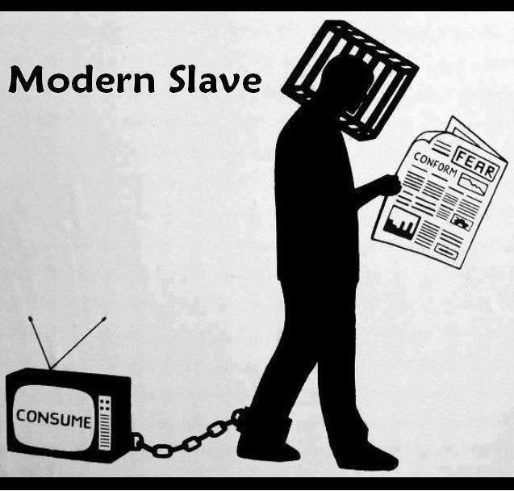
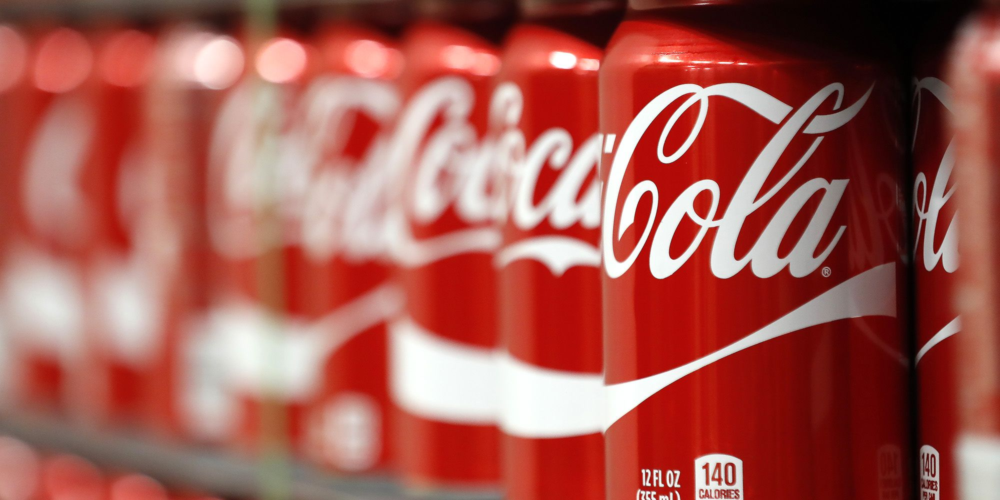
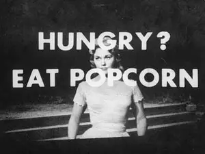

Publicitatea subliminală este utilizarea mesajelor subliminale și inconștiente în spații publicitare al căror scop principal este de a crea stimuli și impacte asupra publicului fără cunoștința lor directă

Publicitatea subliminală este utilizarea mesajelor subliminale și inconștiente în spații publicitare al căror scop principal este de a crea stimuli și impacte asupra publicului fără cunoștința lor directă

În general, publicitatea subliminală este utilizată prin intermediul mesajelor audiovizuale (fixate, cum ar fi imaginile din reviste sau postere sau mișcarea prin cadre) emise sub pragul percepției conștiente. Aceasta înseamnă că ajung la creierul uman, dar într-un mod inconștient pentru oameni. Informațiile sunt depuse în capul lor, astfel încât să nu afle direct. Obiectivul este ca aceste informații să împingă dorința consumatorilor către un anumit produs, creând o nevoie pentru acesta și influențând comportamentul lor ca cumpărători.Cu ajutorul capacității de percepție a ochiului uman și a creierului (care funcționează diferit), sunt transferate mesaje subliminale care stimulează senzații sau idei precum anxietate, foame, panică sau sete, cu ajutorul sugestiei.
Cea mai cunoscută cercetare, pentru a ilustra acest lucru este studiul Vicary în 1958,
prin care cercetatorii trebuiau să se stimuleze subliminal cumpărarea de Coca-Cola şi Popcorn. În
cadru acestui experiment s-a proiectat pe ecran în timpul unui film, cu perioadă de
expunere de 1/3000 secunde, îndemnul „eat Popcorn” şi „drink Coca-Cola”. Se afirmă astfel că, 45.699 spectatori au vizionat acest film. Vânzările de Popcorn
şi Coca-Cola de la cinematograf în perioada reclamei subliminale au fost comparate cu
perioada premergătoare. La Popcorn a rezultat o creştere a cifrei vânzării cu 58% , iar la Coca-Cola cu 18%


Analizand companiile de succes ,observam ca incearca sa mentina expunerea la public cat mai simpla si mai directa cu posibilii lor cumparatori. Idee de "exisat doar publicitate" este gresita. Consumatorii nu sunt intereasti sa isi satisfaca nevoile si dorintele prin produse necalitative, ceea ce duce la faliment